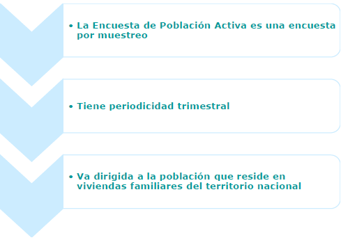
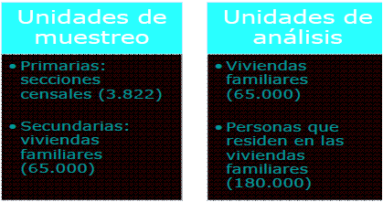
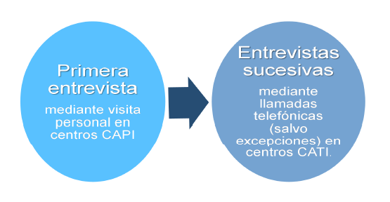
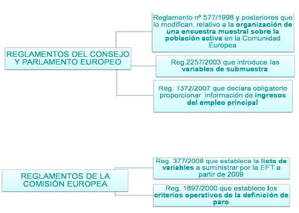
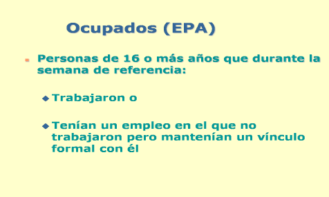
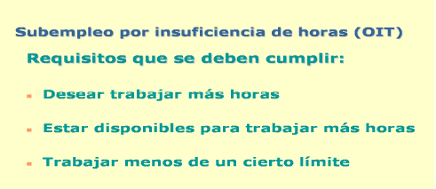
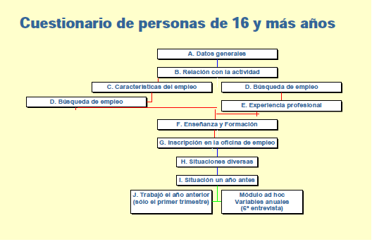
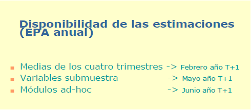

La Estadística Oficial
Tratamiento de Datos
Benito José Velasco de Abreu Alves
Instituto Nacional de Estadística
Objetivos
Analizar los Sistemas Estadísticos Estatal y Europeo
Obtener datos en el Portal Web del INE
Tratar los datos con el programa estadístico R
1. El Sistema Estadístico Estatal
El Sistema Estadístico Estatal es el encargado de elaborar las estadísticas oficiales del Estado Español, así como de las estadísticas oficiales del Sistema Estadístico Europeo.
Antecedentes históricos
1856: Comisión Estadística del Reino
1945: Ley de Estadística → Instituto Nacional de Estadística
1964: Primer ordenador en el INE
1989: Ley de la Función Estadística Pública (LFEP)
Justificación de la Estadística Oficial y su regulación
Herramienta básica para la toma de decisiones del Estado.
Necesidades crecientes de información.
Avances en las TIC.
Relaciones en materia estadística con las CCAA y la UE.
Estructura del Sistema Estadístico Estatal
Se define atendiendo a tres pilares fundamentales:
Las normas que rigen el funcionamiento del sistema
Los agentes participantes
Las estadísticas que se elaboran en dicho sistema

1. Las normas que rigen el Sistema
Constitución Española: "el Estado tiene competencia exclusiva sobre las estadísticas para fines estatales"
Ley de la Función Estadística Pública (LFEP), de 9 de mayo de 1989, regula la actividad estadística estatal. Establece:
Quiénes son los agentes participantes en el sistema, sus funciones, competencias, actuación y relaciones.
La planificación estadística.
Los principos de la recogida de datos: 1. Secreto estadístico. 2. Transparencia. 3. Especialidad. 4. Proporcionalidad.
2. Los agentes participantes
Atendiendo a una clasificación primaria de los grupos de interés, los agentes participantes en el Sistema Estadístico Estatal se pueden dividir en tres grandes grupos: productores, informantes y usuarios.
De este modo, la LFEP insta a los servicios estadísticos de la Administración del Estado a producir las estadísticas para fines estatales que demandan los usuarios utilizando los datos que les proporcionan los informantes.
Relaciones entre los agentes
Los usuarios demandan estadísticas de calidad, al menor coste, de amplia y puntual difusión en un formato accesible.
Los informantes seleccionados tienen la obligación de proporcionar la información que se les solicite.
Los productores han de elaborar sus estadísticas con independencia, la mayor calidad posible, garantizando el secreto estadístico de los informantes y optimizando la utilización de sus recursos, minimizando la carga de respuesta de los informantes y de forma que se puedan compartir y reutilizar las herramientas empleadas en el proceso estadístico.
Los usuarios
Las Instituciones Públicas, ya sean administraciones públicas españolas (estatales, autonómicas o locales), la Unión Europea o bien otros organismos internacionales (Naciones Unidas, FMI, OCDE, …)
Resto de usuarios: organizaciones empresariales o sindicatos, los investigadores (universitarios o servicios de estudios privados), los analistas y medios especializados y la sociedad en general.
Los informantes
Las personas físicas, que constituyen la fuente principal de las encuestas a hogares (encuestas demográficas, sociales y algunas económicas).
Las personas jurídicas privadas, fuente principal de las encuestas a empresas.
La administración pública, que dispone de numerosos registros administrativos, que constituyen la base principal de una gran mayoría de estadísticas y sirven de apoyo a otras tantas operaciones.
Los productores
Según la LFEP, los agentes que desarrollan la función estadística pública en el ámbito de la Administración del Estado son:
El Instituto Nacional de Estadística (INE)
Los servicios estadísticos de los departamentos ministeriales y de otras entidades públicas
El Consejo Superior de Estadística (CSE)
La Comisión Interministerial de Estadística (CIE)
El Comité Interterritorial de Estadística (CITE)
El Instituto Nacional de Estadística (INE)
El INE en la sociedad
El Instituto Nacional de Estadística (INE) (Cont..)
El Instituto Nacional de Estadística (INE) es el organismo central de Estadística en España.
Es un Organismo Autónomo, adscrito al Ministerio de Economía y Competitividad, y goza de la capacidad funcional necesaria para garantizar su neutralidad operativa.
Cuenta con alrededor de 4.000 empleados, de los cuales unos 700 pertenecen a los Cuerpos Estadísticos del Estado, distribuidos en tre los SSCC y las 52 Delegaciones Provinciales.
El Instituto Nacional de Estadística (INE) (Cont..)
Sus funciones principales son:
La coordinación de los servicios estadísticos de la AGE
La realización de las principales operaciones estadísticas
La formación del Directorio Central de Empresas (DIRCE)
La formación del Censo Electoral y del Padrón Contínuo
La difusión de resultados y metodologías de las estadísticas oficiales
Las relaciones internacionales en materia estadística
Los otros servicios de estadística
Departamentos de estadística de los Ministerios
Banco de España
Consejo General del Poder Judicial
El Consejo Superior de Estadística (CSE)
Es el máximo órgano consultivo de la estadística pública y de participación social de los productores, informantes y usuarios de las estadísticas para fines estatales. Su Presidente es el Ministro de Economía y Competitividad.
Funciones:
Dictamina los proyectos de estadísticas para fines estatales, así como el anteproyecto del Plan Estadístico Nacional.
Aprueba la Memoria anual de su actividad y es informado de las memorias del resto de agentes públicos (INE, otros servicios, CIME, CITE)
La Comisión Interministerial de Estadística (CIME)
Es un órgano de participación de los servicios estadísticos de la Administración del Estado. Presidida por el Presidente del Instituto Nacional de Estadística
Objetivos principales:
Fomentar la coordinación y fortalecer la cooperación entre ellos.
Integrar los sistemas de información estadística, homogeneizando y normalizando los aspectos conceptuales y metodológicos.
Promover el mantenimiento de registros y directorios de unidades estadísticas, como marco para la realización de encuestas.
El Comité Interterritorial de Estadística (CITE)
Es el Órgano colegiado encargado de velar por la coordinación, la cooperación y la homogeneización en materia estadística entre el Estado y las Comunidades Autónomas.
Los servicios estadísticos de la Administración del Estado conviven con las Oficinas Centrales de Estadística de las Comunidades Autónomas (OCECA), que pueden elaborar estadísticas para fines autonómicos.
Pero los indicadores nacionales y regionales de España que se manejan como cifras oficiales a nivel internacional provienen de los resultados obtenidos por el Sistema Estadístico Estatal.
Funciones:
Promover la explotación conjunta de fuentes administrativas. Propiciar intercambios para completar y mejorar directorios y registros, para la coordinación de sus sistemas integrados de información estadística, y para la formación del inventario de las estadísticas disponibles. Potenciar el intercambio de experiencias metodológicas en materia estadística, incluyendo los procedimientos de recogida y tratamiento de datos y llevar a cabo el seguimiento periódico de los convenios de cooperación en materia estadística que se hayan establecido.
El Plan Estadístico Nacional (PEN)
Principal instrumento ordenador de la actividad estadística de la AGE. Se aprueba mediante Real Decreto.
Formulado por el INE junto con los demás servicios estadísticos estatales, en su tramitación intervienen CSE, CIME y CITE.
Contiene las estadísticas que los servicios estadísticos estatales se comprometen a elaborar durante el cuatrienio de vigencia del Plan.
Las estadísticas del PEN son de cumplimentación obligatoria y sus resultados tienen carácter oficial.
Los Programas Anuales de Desarrollo (PA)
Para cada Plan Estadístico Nacional se formulan cuatro Programas Anuales que contienen los trabajos concretos que han de realizarse en dicho año con el fin de ejecutar el PEN. Se aprueban mediante Real Decreto.
Sirven también como herramientas de actualización del PEN con los que incorporar estadísticas no incluidas inicialmente en él o se eliminan las que han dejado de realizarse. Asimismo, se pueden modificar las estimaciones de costes a incorporar en los Presupuestos Generales del Estado.
El Inventario de Operaciones Estadísticas (IOE)
Es un repertorio de las operaciones estadísticas realizadas por el Instituto Nacional de Estadística, los Departamentos Ministeriales, el Banco de España y el Consejo General del Poder Judicial.
Constituye una herramienta fundamental de coordinación y planificación estadística y sirve de base para la formulación del PEN.
El INE es el responsable de elaborar, mantener y actualizar el IOE.
El IOE es accesible al público a través de la página web del INE y en él se puede consultar la ficha de cada una de las operaciones inventariadas, o bien obtener la relación de operaciones según diferentes criterios.
Tests
Planificación Estadística
¿Quién aprueba el Plan Estadístico Nacional (PEN)?
- El Instituto Nacional de Estadística (INE)
- El Consejo Superior de Estadística (CSE)
- El Comité Interministerial de Estadística (CIME)
- El Comité Interterritorial de Estadística (CITE)
- El Consejo de Ministros
La ley 12/1989, de 9 de mayo, de la Función Estadística Pública, establece, en su
artículo 8 que El Plan Estadístico Nacional será aprobado por Real Decreto y tendrá una vigencia de cuatro años. Por tanto, es aprobado por el Consejo de Ministros.
No obstante lo anterior, la ley establece que, previamente a su aprobación, el PEN ha de ser dictaminado por el CSE e informado por el CIME y el CITE.
El Plan Estadístico Nacional es el principal instrumento ordenador de la actividad Estadística de la Administración General del Estado y tiene una vigencia de cuatro años.
Correlación

¿Cuál de estos dos diagramas de dispersión tiene mayor correlación?
- A
- B
Ambos tienen la misma correlación.
Probabilidades
Linda tiene 31 años de edad, soltera, inteligente y muy brillante. Se especializó en filosofía. Como estudiante, estaba profundamente preocupada por los problemas de discriminación y justicia social, participando también en manifestaciones anti-nucleares.
¿Que es más probable?
- 1. Linda es una cajera de banco.
- 2. Linda es una cajera de banco y es activista de movimientos feministas.
Piensa en las probabilidades de cada suceso y en las de ambos conjuntamente.
La respuesta correcta es la 1.
La probabilidad de que dos eventos ocurran juntos (en "conjunción") es siempre menor o igual que la probabilidad de que cada uno ocurra por separado. Formalmente, para dos sucesos A (cajera) y B (activista), esta desigualdad podría escribirse como:
P(A) >= P(A ∩ B) <= P(B)
En un estudio realizado por Tversky y Kahneman, el 85% de los encuestados eligió, sin embargo, la opción 2. Los autores argumentan que la mayoría de las personas tienen este tipo de problemas porque usan la representatividad heurística para hacer estos juicios: La opción 2 es la más "representativa", basada en la descripción de Linda, pero matemáticamente es menos probable.
Esto se denomina Falacia de la Conjunción, que sucede cuando se asume que condiciones específicas son más probables que una general sencilla.
2. El Sistema Estadístico Europeo (SEE)
2. El Sistema Estadístico Europeo (SEE)
3. Los datos del Instituto Nacional de Estadística
Las Estadísticas del INE

La página web del INE (www.ine.es)
La Encuesta de Población Activa
Al final de la sesión haremos una práctica en R con un fichero de microdatos de la EPA. Por tal motivo, vamos a estudiar primero, de manera resumida, la metodología de la EPA.
La Encuesta de Población Activa (EPA)
CARACTERÍSTICAS DE LA ENCUESTA

La Encuesta de Población Activa (EPA)
TIPO DE MUESTREO
- Muestreo bietápico con estratificación en las unidades de la primera etapa

La Encuesta de Población Activa (EPA)
PERMANENCIA EN LA MUESTRA

La Encuesta de Población Activa (EPA)
ESTIMADORES DE RAZÓN
La Encuesta de Población Activa (EPA)
REPONDERACIÓN O CALIBRADO DE LOS FACTORES DE ELEVACIÓN

La Encuesta de Población Activa (EPA)
REALIZACIÓN DE LAS ENTREVISTAS

La Encuesta de Población Activa (EPA)
ÁMBITO POBLACIONAL

La Encuesta de Población Activa (EPA)
PERÍODOS DE REFERENCIA

La Encuesta de Población Activa (EPA)
MARCO LEGISLATIVO INTERNACIONAL

La Encuesta de Población Activa (EPA)
DEFINICIONES
Las definiciones de la EPA se basan en las recomendaciones aprobadas por la Organización Internacional del Trabajo (OIT).
Están referidas al concepto nacional (residentes en el territorio), de acuerdo con el Sistema Europeo de Cuentas Integradas (SEC).
Por tanto, no incluyen a aquellas personas que trabajando en España, residen en el extranjero, que formarían parte del concepto interior.
La Encuesta de Población Activa (EPA)
POBLACIÓN ACTIVA

La Encuesta de Población Activa (EPA)
OCUPADOS

La Encuesta de Población Activa (EPA)
OCUPADOS
La Encuesta de Población Activa (EPA)
SUBEMPLEO POR INSUFICIENCIA DE HORAS

La Encuesta de Población Activa (EPA)
SUBEMPLEO POR INSUFICIENCIA DE HORAS

La Encuesta de Población Activa (EPA)
SUBEMPLEO INADECUADO

La Encuesta de Población Activa (EPA)
PARADOS

La Encuesta de Población Activa (EPA)
INACTIVOS

La Encuesta de Población Activa (EPA)
TASAS

La Encuesta de Población Activa (EPA)
OTRAS TASAS
La Encuesta de Población Activa (EPA)
CUESTIONARIO

La Encuesta de Población Activa (EPA)
DIFUSIÓN DE RESULTADOS TRIMESTRALES

La Encuesta de Población Activa (EPA)
DIFUSIÓN DE RESULTADOS ANUALES

4.Tratamiento de datos con R
Instalación de R y RStudio
R es un lenguaje de programación orientado al análisis estadístico y la representación de datos. (http://cran.es.r-project.org/)
RStudio es una GUI, Graphical user interface, para R (RStudio http://rstudio.org/)
R Markdown (http://rmarkdown.rstudio.com/). Es un formato de ficheros para hacer documentos dinámicos con R. Un documento R Markdown se escribe en lenguaje Markdown (lenguaje de marcado) y contiene porciones de código R code.
Guit y GuitHub
Git (https://git-scm.com/). Es un software de control de versiones diseñado por Linus Torvalds, creador de Linux.
Github (https://github.com/). Es una plataforma de desarrollo colaborativo) para alojar proyectos utilizando el sistema de control de versiones Git. El código se almacena de forma pública, aunque también se puede hacer de forma privada, creando una cuenta de pago.
Dentro de la plataforma y sin necesidad de registrarte, si buscas la cadena SeminTFG2017 encontrarás el repositorio con todo el material empleado en esta sesión, que podrás descargarte a tu ordenador.
Recursos para aprender R y RStudio
Entorno de trabajo R. RStudio (http://www.um.es/ae/FEIR/10/)
Coursera (https://www.coursera.org/). Plataforma de educación virtual desarrollada por la Universidad de Stanford. Especialmente recomendable para nuestro propósito, es la especialización en Data Science de la Universidad Johns Hopkins (Baltimore).
Recursos para aprender R y RStudio
Swirl (http://swirlstats.com/). Paquete de R que permite cargar en RStudio una gran variedad de cursos de autoaprendizaje. Se recomienda empezar por R Programming.
Código de instalación:
install.packages("swirl")
library(swirl)
install_course("R Programming")
swirl()
Ejemplos de trabajos realizados
Plan de Trabajo
Descargaremos de www.ine.es el fichero de microdatos de la EPA del cuarto trimestre de 2016 (Últimos datos disponibles),
Lo leeremos con el Programa R.
Calcularemos los valores de las principales categorías poblacionales en relación con el mercado de trabajo (Ocupados, Parados, Activos e Inactivos) y las tasas asociadas, clasificadas según diversas variables sociodemográficas (Sexo, Edad, Formación,...).